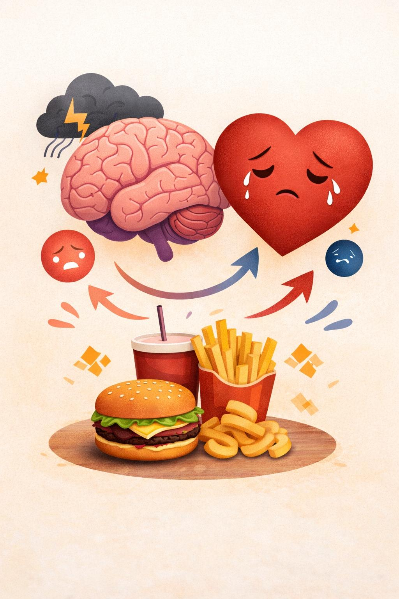
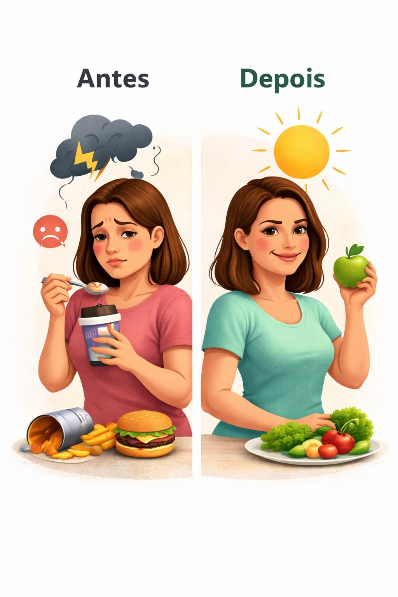

Se você já tentou controlar a sua alimentação…
mas acaba comendo sem perceber no final do dia…
o problema não é disciplina.
É emocional.
Mas quando percebe já está comendo sem controle.
Depois vem a culpa e a frustração.
E a promessa de começar novamente amanhã.
Existe um gatilho emocional que ativa automaticamente o seu comportamento.

Não é falta de controlo. É um padrão emocional.
Você aprende a identificar o gatilho e interromper o processo antes da compulsão.
Ansiedade → Desejo → Comer → Alívio → Culpa → Repetição
Isso não é sobre força de vontade — é sobre entender o comportamento.

Quando você aprende a agir antes do impulso, o ciclo começa a quebrar naturalmente.
Este não é um conjunto de dicas soltas. É um processo guiado para quebrar o ciclo da compulsão passo a passo.
Dia 1 — Identificar gatilhos
Você aprende a reconhecer exatamente o que desencadeia os episódios de compulsão.
Dia 2 — Consciência alimentar
Entender o momento em que o impulso começa — antes de perder o controlo.
Dia 3 — Interromper o impulso
Técnicas simples para travar o comportamento automático.
Dia 4 — Controle emocional
Aprender a lidar com ansiedade sem usar a comida como escape.
Dia 5 — Organização alimentar
Ajustes práticos que reduzem episódios impulsivos.
Dia 6 — Reprogramação de hábitos
Substituir padrões antigos por comportamentos mais conscientes.
Dia 7 — Consolidação
Fixar o processo para que isso se torne natural no dia a dia.
Você não depende de força de vontade — você muda o padrão.
Ebook – 19€
Checklist – 9€
Guia ansiedade – 12€
Plano alimentar – 7€
Total: 47€
Mas hoje você não precisa pagar os 47€.
12,90€
Quero começar agoraTeste o material sem risco.
Se não ajudar, você pode pedir reembolso.
Isso funciona mesmo se eu já tentei várias dietas?
Sim — porque o problema não está na dieta, mas na relação emocional com a comida. O método atua exatamente nesse ponto.
Vou precisar fazer restrições ou cortar alimentos?
Não. O foco não é restringir, mas entender e controlar o comportamento.
E se eu não conseguir aplicar?
O método foi criado para ser simples e prático. Você aplica no dia a dia, sem precisar mudar toda a sua rotina.
Quando recebo o acesso?
Imediatamente após a confirmação da compra.
Isso é só mais um ebook?
Não. É um processo guiado com exercícios práticos para você aplicar — não apenas teoria.